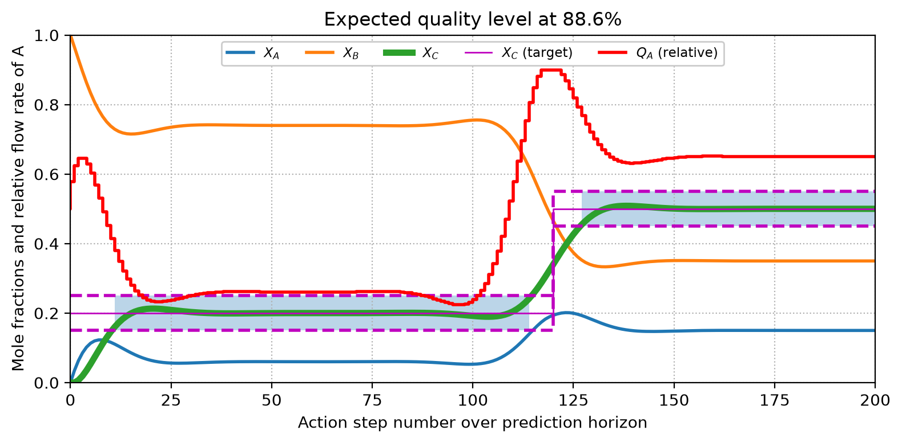
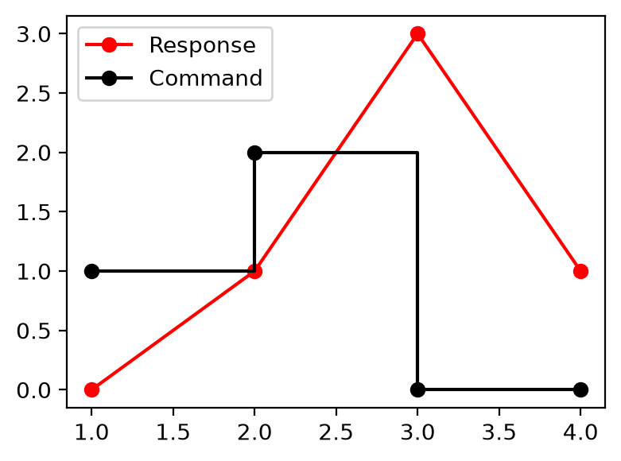
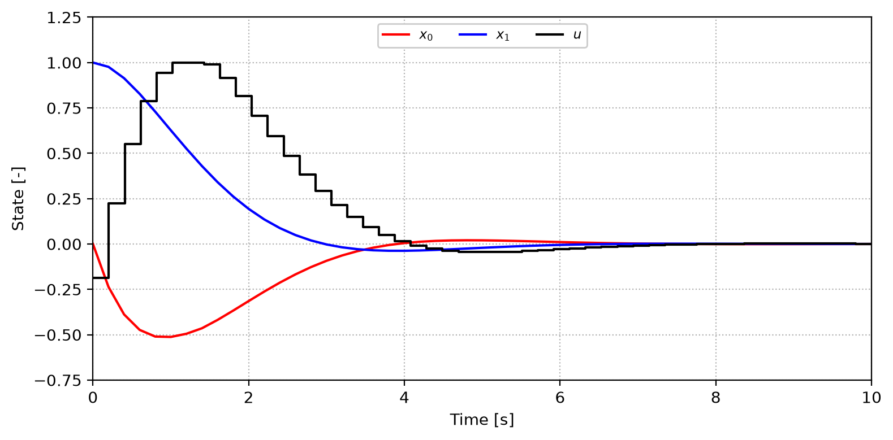
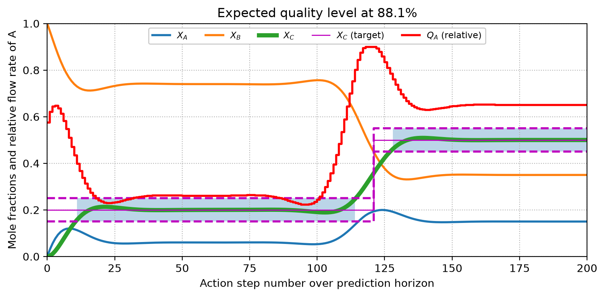

import casadi as cs
import numpy as np
import matplotlib.pyplot as plt
from typing import Any
from casadi import SX, MX, DM, Function
from casadi import nlpsol, integrator
from casadi import vertcat, linspaceA Chemical Plant MPC
Foreword
In this short article, we will introduce the basics of model predictive control (MPC) by implementing a continuous stirred tank reactor (CSTR) conversion plant model. This will simulate the output concentration of a chemical species whose set-point changes over time, i.e., to follow customer orders which require different product concentrations. This is an interesting problem because reactor dilution takes time and a simple proportional-integral (PI) controller would not be enough to track the concentration with minimal out-of-specification periods.
The problem will be implemented with the help of the CasADi package and its Python interface so that we can take advantage of its features, such as automatic differentiation and interface to robust numerical solvers. The development will be broken down into three parts. First, we will implement the model from scratch and test its functioning. Then it will be refactored into a more modular code, before being organized as library code to be reused. The goal is to provide an intuitive introduction to the topic which can serve as a basis for further learning.
Working with CasADi requires a brief introduction to its data types. The package provides a symbolic class SX to enable algorithmic differentiation through the construction of computational graphs. It can be used to build expressions which can be later evaluated through the use of Function objects. Numerical data returned from solvers is found in dense matrix format DM. Other functions imported from casadi are related to problem solution and vector concatenation vertcat and are discussed in their context of usage.
Preliminary implementation
The problem we will model here consists of a hypothetical chemical plant where reagent \(A\) is reacted with carrier fluid \(B\) in a single continuous stirred tank reactor (CSTR) to produce \(C\), whose concentration is the target. The transformation happens at constant volume, represented by \(n_t\) moles. The chemical process is illustrated as the irreversible reaction happening at a known rate \(k_1\):
\[ A + B \rightarrow C + B \]
In this plant, we are capable of controlling the molar flow rates of both \(A\) and \(B\), \(\dot{n}_A\) and \(\dot{n}_B\), which affect the production rate of \(C\) leaving the reactor at a mole fraction \(x_C\). For smooth functioning of the system, the total flow rate is required to remain constant at \(\dot{n}_t\) so that \(\dot{n}_B = \dot{n}_t - \dot{n}_A\), i.e. a compensation valve is the control action. Thus, we have a single degree of freedom in the actions we can take to control this simple system.
Under these assumptions, the species balance for a species \(i\) is given below. The source term \(\dot{n}_{gen,B}\) is zero as \(B\) is a carrier fluid, and for the other species it is computed as a first-order homogeneous kinetic rate law (thus independent of the carrier concentration).
\[ \begin{aligned} n_t\dot{x}_i &= \dot{n}_i - \dot{n}_t x_i + \dot{n}_{gen,i} \\[12pt] \dot{n}_{gen,A} &= -\dot{n}_{gen,C} = -k_1 x_A \\[12pt] \dot{n}_{gen,B} &= 0 \end{aligned} \]
Before entering the details of the symbolic model implementation, we start by defining the parameters that are held constant in our problem. These include the reaction rate \(k_1\), the size of reactor \(n_t\) and the total flow rate of \(\dot{n}_t\).
# Reaction rate constant [mol/s]:
k_1 = 10.0
# Reactor amount of matter [moles]:
n_t = 500.0
# Reactor total flow rate [mol/s]:
ndot_t = 3.0Symbolic model definition
The model formulated in the previous section establishes differential equations for the mole fractions of the different species taking part in our fictional system. Although SX symbolics allows us to declare them in vector form, here we have chosen to declare them separately to keep the model code close to the mathematical formulation. The advantage of using SX symbolics is that it allows for automatic differentiation of expressions, which is helpful for the computation of Jacobian and Hessian matrices required by the numerical solvers.
x_A = SX.sym("x_A")
x_B = SX.sym("x_B")
x_C = SX.sym("x_C")For the inlet flow rates, we declare a single symbolic variable for \(\dot{n}_A\) and evaluate the value of \(\dot{n}_B\) as a constraint built into the model. Notice here that we can use numerical ndot_t and symbolic ndot_A in the same expression, illustrating the interoperability of CasADi’s symbolics and plain Python numbers.
ndot_A = SX.sym("ndot_A")
ndot_B = ndot_t - ndot_A
ndot_C = 0.0Source terms are provided below following the mathematical formulation:
rate = k_1 * x_A
ndot_gen_A = -rate
ndot_gen_B = 0.0
ndot_gen_C = +rateThese source terms complete the set of elements required to construct the differential equations describing the time-evolution of the system. The outlet flow rate is given by the product of total flow rate and molar fractions: \(\dot{n}_t x_i\), as per the definition of an ideal CSTR.
xdot_A = (ndot_A - ndot_t * x_A + ndot_gen_A) / n_t
xdot_B = (ndot_B - ndot_t * x_B + ndot_gen_B) / n_t
xdot_C = (ndot_C - ndot_t * x_C + ndot_gen_C) / n_tWhen using CasADi, one often refers to the unknowns of the problem as x and parameters as p. Please note that parameters can be symbolic (such as ndot_A) and are provided only at solution time. Here we concatenate the array of unknowns using vertcat. There is no need to convert p into an array; we just give an alias p to ndot_A so that we can use the standard CasADi formalism.
x = vertcat(x_A, x_B, x_C)
p = ndot_A
NoteMore about parameters
Numerical parameters (such as ndot_t) are not modifiable as they take part in the construction of the computational graph, so one must decide whether to keep them as Python constants or use a symbolic representation before model definition. This is important because leaving everything modifiable at runtime can create cumbersome interfaces that require too many parameters to be used, so careful design is recommended.
Problem right-hand side
The assembly of the integrator consists of defining functions to evaluate the right-hand side (RHS) of the ODE system and stepping over a given time window. By “integrator,” we mean here the full routine that evaluates the solution output over the time interval of the problem, rather than just the time-stepping algorithm often referred to in the ODE literature.
Using Function, we wrap the previous expressions into something that can be evaluated in terms of x and p. Each function is provided a name, a list of inputs, and a list of outputs. These could also be named, but we skip that here for simplicity. Also, we do not make use of any other optional arguments and you can check their usage in the documentation.
F_xdot_A = Function("F_xdot_A", [x, p], [xdot_A])
F_xdot_B = Function("F_xdot_B", [x, p], [xdot_B])
F_xdot_C = Function("F_xdot_C", [x, p], [xdot_C])
NoteInspecting a function
It is interesting to check the string representation of a Function. Here we see that it receives a first input i0 which is an array of 3 elements (the shape of x) and a second number i1 (representing p) to return a single value o0 (the derivatives). As stated before, you can name these I/O using the more detailed interface of Function.
F_xdot_AFunction(F_xdot_A:(i0[3],i1)->(o0) SXFunction)We can check the proper functioning of these functions as normal Python functions, which can be evaluated numerically. Return values are of type DM, CasADi’s way of representing dense matrices (here an order zero matrix, a single number).
F_xdot_A([0.5, 0.5, 0], 10),\
F_xdot_B([0.5, 0.5, 0], 10),\
F_xdot_C([0.5, 0.5, 0], 10)(DM(0.007), DM(-0.017), DM(0.01))Prediction horizon
The first step in converting our simple ODE problem into an MPC is the definition of its prediction horizon \(N_p\) and associated output step \(\tau\). Their values depend on the time scales of the process at hand and the ability to change its input (control) parameters. This makes MPC an intrinsically multidisciplinary subject, requiring the process and control specialist to work together.
For a CSTR, the characteristic residence time is given by \(\tau_{c} = n_t / \dot{n}_t\). This value must be at least one order of magnitude greater than the integration step \(\tau\), and reasonably smaller than the time horizon \(N_p \tau\). Given the defined reactor size and total flow rate, the characteristic time of the system \(\tau_c\) is on the order of \(n_t/\dot{n}_t = 500\:\mathrm{mol} / 3\:\mathrm{mol\cdotp{}s^{-1}} \approx 170\:\mathrm{s}\). To ensure that the time horizon is long enough for the optimization routine to anticipate system dynamics and apply corrections in time, and that the time steps are small compared to the characteristic time, we choose to take into account the next 2000 s of the dynamics by integrating 200 steps of 10 s.
# Prediction horizon:
Np = 200
# Time-step of outputs:
tau = 10.0
Important
Please note that the horizon size \(N_p\) alone is meaningless without the definition of the time-step \(\tau\) between consecutive corrective actions. This again must take into consideration the delays in the system response and the valve itself in this specific case. Also note that the time-step \(\tau\) may be the same as that used for integration of the problem if its stiffness allows for it. For stiff problems we generally use smaller inner time-steps to reach the output interval \(\tau\), while keeping the control action constant in between. This is often the case in combustion processes or complex gas pressure controls.
Cost function composition
Next comes the definition of the cost function, which is generally composed of a local quadratic term penalizing deviations of controlled variables from their target values (set-points), another term penalizing large control actions, and a terminal penalty.
The scale of the problem is usually selected to be that of deviation of the main controlled variable, so the multiplier of the quadratic term \(Q\) is set to unity (or the identity matrix in more complex multidimensional formulations).
For the command change penalty, the scale \(R\) must be chosen so that it remains in the right order of magnitude compared to the target variable cost while still performing its function.
The last parameter \(S\) is the terminal penalty weight, generally set to a high value so that we enforce the last point in the prediction horizon to match the set-point.
# Set-point penality scale:
Q = 1.0
# Command change penality scale:
R = 0.1
# Terminal penalization:
S = 100.0Additional constraints
Additional constraints may need to be added to the problem. These may arise from quality requirements or technical constraints of the plant itself. For instance, let’s assume our compensation valve does not allow the fraction of \(A\) in the total flow to be above 90% of the total feed rate. This constraint will be imposed on each action of the system over the process window.
ndot_A_max = 0.9 * ndot_tAssembly of the integrator
First, we declare the cost function (which is initially zero) and an array for the constraints. For each decision variable, we also need lower and upper bounds. To close the system, we store the command \(v\) used during each output interval. These variables will be populated in what follows.
# Cost function:
J = 0.0
# Solution lower/upper boundaries:
lbx = []
ubx = []
# Control variable over prediction horizon:
v_ndot_A = []
Caution
In the above, the lower and upper boundaries lbx and ubx refer to the decision variables of our optimization problem (here, the controller command for the flow rate of \(A\)), rather than the states of the differential system. The command can vary from zero up to its maximum allowable value, which is 90% of the total flow rate in this case. Note that constant numeric values could have been provided here, but for generality we will use a list and feed it along with the integration so that you can see how to implement possibly varying control boundaries.
Another requirement is to have the target concentration trajectory (set-point) over the prediction horizon. It is symbolically declared as xs_C and contains one extra point over Np representing the current state of the reactor (initial condition).
xs_C = SX.sym("xs_C", Np+1)The initial state of the system is set to the symbols we already know (later we will replace them with numeric measurements). For the control input, it is initially set to 50% (ndot_A_ini) of the total capacity, which will impact the first command change. Remember that we are handling the variables individually, but in a real-world problem you would probably use a vector containing all variables, just as we did for x before.
xt_A, xt_B, xt_C = x_A, x_B, x_C
# Idle control input (initial state)
ndot_A_ini = 0.5 * ndot_tFinally, we integrate the system over time. The loop consists of a few key steps:
- Creating a command variable
v_ndot_a_tsfor the current step. - Bounding the values of the control variable through
lbxandubx. - Stacking the current system state in
xnand the current control command inpn. - Integrating the system dynamics over the time step.
- Incrementing the cost function with the tracking error and control effort.
- Adding constraints on the states and controls (omitted in this simple case).
- Adding the terminal cost scaled by \(S\) to complete the objective function.
Below, we use a simple forward Euler time-stepping scheme.
for ts in range(Np):
v_ndot_A_ts = SX.sym(f"v_qdot_A_{ts}")
v_ndot_A.append(v_ndot_A_ts)
lbx.append(0.0)
ubx.append(ndot_A_max)
xn = vertcat(xt_A, xt_B, xt_C)
pn = v_ndot_A_ts
xt_A = xt_A + tau * F_xdot_A(xn, pn)
xt_B = xt_B + tau * F_xdot_B(xn, pn)
xt_C = xt_C + tau * F_xdot_C(xn, pn)
v_prev = ndot_A_ini if ts == 0 else v_ndot_A[ts-1]
scale_error = xt_C - xs_C[ts]
scale_change = v_prev - v_ndot_A_ts
cost_error = Q * pow(scale_error, 2)
cost_change = R * pow(scale_change, 2)
J += cost_error + cost_change
J += S * pow(xt_C - xs_C[-1], 2)
NoteAbout the initial command
Different approaches could be used for the initial command. Here we have decided to illustrate the system with a hypothetical known idle state initial flow rate of \(A\), and use R to avoid abrupt changes in the flow command. This way we use this value to compute the initial step accordingly. Another approach would be to use a constraint to enforce the idle state in the first step, for example.
The optimization problem is assembled below. Here we have chosen to optimize the problem with Ipopt (which can be accessed through the interface nlpsol) as a nonlinear problem. In some cases you might wish to use a quadratic solver, but it imposes some limitations in problem formulation. You should do that when solving it as an NLP is too slow for your problem. In CasADi’s representation, f denotes the cost function, x the decision variables (the control commands in our case), g the constraints, and p the parameters (symbolic variables that must be supplied numerically at runtime). Here, p is the array of set-points and the system initial state. The nlpsol interface creates a solver object that can be reused for subsequent optimization calls.
nlp = {
"f": J,
"x": vertcat(*v_ndot_A),
"p": vertcat(xs_C, x)
# "g": vertcat(*g), # Not used here!
}
opts = {"ipopt": {"print_level": 3}}
solver = nlpsol("solver", "ipopt", nlp, opts)Below we can inspect the interface of the solver with the sizes of the arrays we must provide.
solverFunction(solver:(x0[200],p[204],lbx[200],ubx[200],lbg[0],ubg[0],lam_x0[200],lam_g0[0])->(x[200],f,g[0],lam_x[200],lam_g[0],lam_p[204]) IpoptInterface)Solving the problem
Let’s now compose the parameters array. For the set-point xs_C_num, consider a scenario where the target concentration of \(C\) is 20% for the first 120 steps (3/5 of the prediction horizon) and increases to 50% for the remaining steps. Below, we translate this requirement into an array used for problem setup.
n_step = 3 * Np // 5
xs_C_num = np.zeros(Np+1)
xs_C_num[:n_step] = 0.2
xs_C_num[n_step:] = 0.5Let’s assume that initially the system is composed only of \(B\), the second element in our composition array. With that, we can merge the above-defined set-point and initial composition arrays in the format expected by the solver (as declared above) to form the parameter vector p.
x0_num = [0.0, 1.0, 0.0]
p = vertcat(xs_C_num, x0_num)Calling the solver is straightforward. If this is the first call to the solver, one typically provides an initial guess consisting of a reasonable physical guess (here, an array of ones). When using the solver in an actual control loop, the results from the previous step are used as a warm start, which is useful for speeding up the solution. The call can be a bit verbose, so you might want to log it in a production environment.
guess = np.ones(Np)
solution = solver(x0=guess, p=p, lbx=lbx, ubx=ubx)
******************************************************************************
This program contains Ipopt, a library for large-scale nonlinear optimization.
Ipopt is released as open source code under the Eclipse Public License (EPL).
For more information visit https://github.com/coin-or/Ipopt
******************************************************************************
Total number of variables............................: 200
variables with only lower bounds: 0
variables with lower and upper bounds: 200
variables with only upper bounds: 0
Total number of equality constraints.................: 0
Total number of inequality constraints...............: 0
inequality constraints with only lower bounds: 0
inequality constraints with lower and upper bounds: 0
inequality constraints with only upper bounds: 0
Number of Iterations....: 14
(scaled) (unscaled)
Objective...............: 3.9015653462196176e-01 3.9015653462196176e-01
Dual infeasibility......: 2.1747432450719620e-16 2.1747432450719620e-16
Constraint violation....: 0.0000000000000000e+00 0.0000000000000000e+00
Variable bound violation: 0.0000000000000000e+00 0.0000000000000000e+00
Complementarity.........: 4.1114517841581608e-09 4.1114517841581608e-09
Overall NLP error.......: 4.1114517841581608e-09 4.1114517841581608e-09
Number of objective function evaluations = 15
Number of objective gradient evaluations = 15
Number of equality constraint evaluations = 0
Number of inequality constraint evaluations = 0
Number of equality constraint Jacobian evaluations = 0
Number of inequality constraint Jacobian evaluations = 0
Number of Lagrangian Hessian evaluations = 14
Total seconds in IPOPT = 0.066
EXIT: Optimal Solution Found.
solver : t_proc (avg) t_wall (avg) n_eval
nlp_f | 0 ( 0) 463.00us ( 30.87us) 15
nlp_grad_f | 0 ( 0) 750.00us ( 46.87us) 16
nlp_hess_l | 41.00ms ( 2.93ms) 42.25ms ( 3.02ms) 14
total | 69.00ms ( 69.00ms) 66.79ms ( 66.79ms) 1Below we recover the solution for reuse in system simulation. Observe that the simulation loop is essentially the same as the construction of the cost function but we implement just the time-stepping routines. This is done here just for plotting purposes and estimation of system performance. Often the simulation of the problem is not required in an MPC.
ndot_A_opt = solution["x"].full().ravel()
xt_A = np.zeros(Np+1)
xt_B = np.zeros(Np+1)
xt_C = np.zeros(Np+1)
xt_A[0] = x0_num[0]
xt_B[0] = x0_num[1]
xt_C[0] = x0_num[2]
for ts in range(1, Np+1):
xn = vertcat(xt_A[ts-1], xt_B[ts-1], xt_C[ts-1])
pn = ndot_A_opt[ts-1]
xt_A[ts] = xt_A[ts-1] + tau * F_xdot_A(xn, pn)
xt_B[ts] = xt_B[ts-1] + tau * F_xdot_B(xn, pn)
xt_C[ts] = xt_C[ts-1] + tau * F_xdot_C(xn, pn)Now let’s assume that, according to the quality department, the product is good to be shipped if its concentration is within 5% of the prescribed value. A boolean array good is created for display. This could be used to predict when the exit valve should feed barrels of product or when to recycle or discard the out-of-specification output.
xs_C_max = np.clip(xs_C_num + 0.05, 0.0, 1.0)
xs_C_min = np.clip(xs_C_num - 0.05, 0.0, 1.0)
good = (xt_C >= xs_C_min) & (xt_C <= xs_C_max)
steps = list(range(Np+1))
quality = 100 * sum(good.astype("u8")) / len(good)
cmd = list(ndot_A_opt / ndot_t)
cmd.append(cmd[-1])Visualizing the results
The next figure illustrates the expected dynamical behavior of the system. First, the concentration of \(C\) rises from zero to the prescribed value in about 15 steps, and because of the change in set-point it starts deviating from the target at step 110 to reach the new value. It is also interesting to observe that the command saturates at 90%, which indicates that achieving the second target is a limiting case for this reactor under the given transition. The product concentration remained within the quality window 88.6% of the time.
plt.close("all")
plt.style.use("default")
fig, ax = plt.subplots(figsize=(8, 4))
ax.grid(linestyle=":")
ax.plot(steps, xt_A, lw=2, label="$X_A$")
ax.plot(steps, xt_B, lw=2, label="$X_B$")
ax.plot(steps, xt_C, lw=4, label="$X_C$")
ax.step(steps, xs_C_max, "m--", lw=2, label="_none_", where="post")
ax.step(steps, xs_C_min, "m--", lw=2, label="_none_", where="post")
ax.step(steps, xs_C_num, "m-", lw=1, label="$X_C$ (target)", where="post")
# Add *negative time* with initial flow rate.
ax.step([-1, *steps], [ndot_A_ini/ ndot_t, *cmd], "r", lw=2,
label="$Q_A$ (relative)", where="post")
ax.fill_between(steps, xs_C_min, xs_C_max, where=good, alpha=0.3)
ax.set_title(f"Expected quality level at {quality:.1f}%")
ax.set_ylabel("Mole fractions and relative flow rate of A")
ax.set_xlabel("Action step number over prediction horizon")
ax.legend(loc="upper center", fancybox=True, framealpha=1.0,
ncol=5, fontsize="small")
ax.set(xlim=(0, Np), ylim=(0, 1))
fig.tight_layout()
NoteRepresenting steps in Matplotlib
Because of how matplotlib.step works, to properly display the commands and responses, we need to add an extra copy of the last command to the end of the results. Using where="post" is also required so that a command starts at the reference time-step it is supposed to. You can check the plotting behavior using the following snippet.
x = [1, 2, 3, 4]
y = [0, 1, 3, 1]
z = [1, 2, 0]
z.append(z[-1])
plt.close("all")
plt.figure(figsize=(4, 3))
plt.plot(x, y, "ro-", label="Response")
plt.step(x, z, "ko-", label="Command", where="post")
plt.legend(loc=2)
plt.tight_layout()
There are many ways you could propose exercises from this guided study:
- Implement a higher order time-stepping scheme.
- Provide simultaneous simulation/optimization with multiple-shooting.
- Investigate role of total flow rate or reactor size over quality.
- Increase error out of target value range (shadowed zones in figure).
- Use the solver in a simulated control loop with random noise in measurements.
- …
Introduction to multiple shooting
In a real-world application, you would probably use a multiple-shooting approach to simultaneously simulate and optimize the problem, if that is required. That comes with an additional computational cost because the optimization problem becomes larger, as we solve for both the differential states and the control inputs simultaneously. In the introductory part of this tutorial, we chose to focus on the main ideas and exploit a simpler approach (from an implementation standpoint).
The multiple shooting strategy is discussed in this section using a different problem, before returning to our MPC concept. We will reformulate a tutorial originally created by Joel Andersson in 2015 and provided in CasADi’s examples package. In this section, we seek to solve the optimal control problem (OCP) given by
\[ \min\int_{0}^{10}x_0^2+x_1^2+u^2dt \]
subjected to
\[ \begin{aligned} \dot{x}_0 &= zx_0-x_1+u & \quad{}t\in[0,10]\\ \dot{x}_1 &= x_0 & \quad{}t\in[0,10]\\ 0 &= x_1^2+z-1 & \quad{}t\in[0,10] \end{aligned} \]
with boundary values
\[ \begin{aligned} x_0(t=0) &= 0\\ x_1(t=0) &= 1\\ x_0(t=10) &= 0\\ x_1(t=10) &= 0 \end{aligned} \]
and bounded control \(u\in[-0.75;1.00]\) over the whole interval, with \(z\) being an algebraic variable. An alternate implementation and description of this problem is provided with Dymos package.
Symbolic DAE definition
The problem is built on SX symbolics defined as follows:
x = SX.sym("x", 2)
z = SX.sym("z")
u = SX.sym("u")The differential and algebraic equations can then be written as:
# Lagrange cost term (quadrature)
quad = x[0]**2 + x[1]**2 + u**2
# Differential equation
ode = vertcat(z * x[0] - x[1] + u, x[0])
# Algebraic equation
alg = x[1]**2 + z - 1Integrator setup
Time integration parameters are then declared:
# Number of intervals.
nk = 50
# Final time [s].
tend = 10.0
# Time step [s].
tf = tend / nkSince we have already defined x as a state vector, it can be supplied directly to the integrator. Below, we use the interface to Sundials IDAS to perform DAE time-stepping in the multiple-shooting algorithm. The value tf represents the integration (output) time step.
dae = {"x": x, "z": z, "p": u, "ode": ode, "alg": alg, "quad": quad}
I = integrator("I", "idas", dae, 0.0, tf)Nonlinear problem
To differentiate the variables of the DAE from those of the multiple-shooting NLP, we will use w in what follows. Below, we initialize arrays for variables, bounds, constraints, and the value of the cost function. These will be used to build the NLP.
# List of variables
w = []
# Lower bounds on w
lbw = []
# Upper bounds on w
ubw = []
# Constraints
g = []
# Cost function
f = 0.0For multiple shooting, we use MX matrix symbolics. For enforcing the initial state in the NLP, we create an initial state Xk and set its lower and upper bounds (lbw and ubw) to match the values given in the problem statement.
Xk = MX.sym("X0", 2)
w.append(Xk)
lbw.extend([0.0, 1.0])
ubw.extend([0.0, 1.0])The core idea behind the multiple-shooting integration loop is straightforward:
We create a local control \(u_k\) to integrate over \(t_k\) to \(t_{k+1}\), which is a free variable in the NLP problem; thus, it must be added to
walong with its bounds inlbwandubw.Then, we call the DAE integrator to retrieve (symbolically) the state and Lagrangian quadrature produced by control \(u_k\) and the current state \(X_k\).
We perform variable lifting, i.e., we store the predicted state and create a new symbolic state which is a free variable in the NLP and must be added to
walong with its bounds inlbwandubw.Finally, we constrain the new state to match the previous prediction in
g, which is the shooting constraint of the integration.
for k in range(nk):
# Local control
Uk = MX.sym(f"U{k}")
w.append(Uk)
lbw.append(-0.75)
ubw.append( 1.00)
# Call integrator function
Ik = I(x0=Xk, p=Uk)
Xk = Ik["xf"]
f += Ik["qf"]
# "Lift" the variable
X_prev = Xk
# Create new symbolic state
Xk = MX.sym(f"X{k+1}", 2)
w.append(Xk)
if k == nk - 1:
# To match mathematical problem terminal conditions:
lbw.extend([0.0, 0.0])
ubw.extend([0.0, 0.0])
else:
lbw.extend([-cs.inf, -cs.inf])
ubw.extend([+cs.inf, +cs.inf])
# Constrain problem
g.append(X_prev - Xk)Solving the problem
To solve the problem, we allocate an NLP solver. Note that the interface of nlpsol is quite similar to that of integrator. Here, we make use of Ipopt to perform optimization. Below, we can inspect the interface of the function created by the wrapper.
nlp = {"x": vertcat(*w), "f": f, "g": vertcat(*g)}
# "ipopt.output_file": "ipopt.txt"
opts = {
"ipopt.print_level": 3,
"ipopt.linear_solver": "mumps"
}
solver = nlpsol("solver", "ipopt", nlp, opts)
solverFunction(solver:(x0[152],p[],lbx[152],ubx[152],lbg[100],ubg[100],lam_x0[152],lam_g0[100])->(x[152],f,g[100],lam_x[152],lam_g[100],lam_p[]) IpoptInterface)To solve the NLP, we provide an initial guess, the bounds of the free variables, and those of the constraints (lbg and ubg). Note that you could provide constraint relaxation in some cases if permitted by specific problems.
sol = solver(x0=0.0, lbx=lbw, ubx=ubw, lbg=0.0, ubg=0.0)Total number of variables............................: 148
variables with only lower bounds: 0
variables with lower and upper bounds: 50
variables with only upper bounds: 0
Total number of equality constraints.................: 100
Total number of inequality constraints...............: 0
inequality constraints with only lower bounds: 0
inequality constraints with lower and upper bounds: 0
inequality constraints with only upper bounds: 0
Number of Iterations....: 11
(scaled) (unscaled)
Objective...............: 2.8826177357895273e+00 2.8826177357895273e+00
Dual infeasibility......: 1.9652761969884969e-10 1.9652761969884969e-10
Constraint violation....: 1.1517597986454575e-10 1.1517597986454575e-10
Variable bound violation: 0.0000000000000000e+00 0.0000000000000000e+00
Complementarity.........: 5.3184136988413354e-09 5.3184136988413354e-09
Overall NLP error.......: 5.3184136988413354e-09 5.3184136988413354e-09
Number of objective function evaluations = 12
Number of objective gradient evaluations = 12
Number of equality constraint evaluations = 12
Number of inequality constraint evaluations = 0
Number of equality constraint Jacobian evaluations = 12
Number of inequality constraint Jacobian evaluations = 0
Number of Lagrangian Hessian evaluations = 11
Total seconds in IPOPT = 1.052
EXIT: Optimal Solution Found.
solver : t_proc (avg) t_wall (avg) n_eval
nlp_f | 40.00ms ( 3.33ms) 29.74ms ( 2.48ms) 12
nlp_g | 24.00ms ( 2.00ms) 29.49ms ( 2.46ms) 12
nlp_grad_f | 308.00ms ( 11.85ms) 311.68ms ( 11.99ms) 26
nlp_hess_l | 485.00ms ( 44.09ms) 481.02ms ( 43.73ms) 11
nlp_jac_g | 199.00ms ( 15.31ms) 202.59ms ( 15.58ms) 13
total | 1.06 s ( 1.06 s) 1.07 s ( 1.07 s) 1Below, you can inspect the keys of the solution dictionary. We are looking for x here. Since the constraint violation in the solver report is acceptable, we can skip the detailed inspection of g residuals. You can also check the value of the cost f.
sol.keys()dict_keys(['f', 'g', 'lam_g', 'lam_p', 'lam_x', 'x'])Unpacking the results
Since when creating free variables vector w we started by initial states before entering the loop to add controls and following states, we have that starting on index 0 the variables correspond to \(x_0\), index 1 to \(x_1\), and index 2 to \(u\). Since there are three variables, we recover then every 3 elements using slicing syntax.
NoteCasADi to NumPy
Calling the .full() method converts the CasADi DM numerical array to plain NumPy. Since this will produce one dimension per element, it is useful to call ravel() to get a one-dimensional array.
xs = sol["x"].full().ravel()
x0 = xs[0::3]
x1 = xs[1::3]
us = xs[2::3]Because we have an initial state, there are nk+1 states and nk control intervals. To properly represent them graphically, we allocate the corresponding time arrays.
tx = linspace(0.0, tend, nk + 1).full()
tu = linspace(0.0, tend, nk + 0).full()Visualizing the results
Finally, the full solution can be visualized. Since controls are held constant over intervals, a step representation is more appropriate for this variable.
plt.close("all")
plt.style.use("default")
fig, ax = plt.subplots(figsize=(8, 4))
ax.grid(linestyle=":")
ax.plot(tx, x0, "r", label="$x_0$")
ax.plot(tx, x1, "b", label="$x_1$")
ax.step(tu, us, "k", label="$u$", where="post")
ax.set(xlabel="Time [s]", ylabel="State [-]")
ax.set(xlim=(0, tend), ylim=(-0.75, 1.25))
ax.legend(loc="upper center", fancybox=True, framealpha=1.0,
ncol=5, fontsize="small")
fig.tight_layout()
Refactoring the original problem
ImportantPlease read carefully
The previous sections were discussed in detail, and extensive explanations were provided for most of the elements. Here, we will be more succinct, with a focus on the code and the multiple-shooting approach itself rather than CasADi usage.
Symbolic DAE and integrator
The creation of the DAE integrator used for time-stepping is presented here. The goal is to keep the code modular and short for ease of review. Here, we have build_integrator, which creates the symbols, generates the computational graph, and returns an IDAS-based integrator.
def build_integrator(t_out: float):
""" Exposed interface to create the parameters and integrator. """
n = SX.sym("n") # Parameter - Reactor size
q = SX.sym("q") # Parameter - Total flow rate
k = SX.sym("k") # Parameter - Rate kinetics constant
x = SX.sym("x", 3) # Variable - Problem states
u = SX.sym("u") # Variable - Control parameter
# Feed flow rates:
ndot = vertcat(q * u, q * (1.0 - u), 0.0)
# Net production rates of species:
ndot_gen = vertcat(-k * x[0], 0.0, k * x[0])
# ODE in vectorized form:
ode = (ndot - q * x + ndot_gen) / n
# Problem parameters:
p = vertcat(u, q, n, k)
# Create IDAS integrator:
dae = {"x": x, "p": p, "ode": ode}
# Integrator for interval [0.0; t_out]:
return integrator("I", "idas", dae, 0.0, t_out)Nonlinear multiple-shooting
Multiple shooting is based on the previous introduction to the approach. Nonetheless, because of CasADi’s intrinsic limitations in providing parametric bounds for values, the implementation presents a noticeable difference in how the constraints are formulated. Since our goal was to refactor the original problem in a reusable way, we chose to keep everything parametric. Thus, we can no longer use the lbw and ubw arguments of the solver, as they must be defined after construction.
The solution in this case is to include all decision variables in the constraint arrays and provide bounds for the variables themselves. To keep things manageable, instead of using a single g list to store all the constraints, we organize one list per type of constraint and enforce zero bounds only for g_residual, providing the proper domain bounds for the other variables.
def get_multiple_shooting_solver(nk: int, tf: float, opts: dict[str, Any]):
""" Construct internals of multiple-shooting problem. """
integ = build_integrator(tf)
f = 0.0 # Cost function
g_controls = [] # Stack control variables
g_variables = [] # Stack simulation variables
g_residual = [] # Stack multiple shooting residuals
pars = MX.sym("pars", 3) # Hold ndot_tot, n_tot, k_rate
weights = MX.sym("weights", 2) # Parameters for cost function
u_ini = MX.sym("u_ini") # Parameter for idle state value
Xs = MX.sym("Xs", nk) # Symbolic parametric SP
U_prev = u_ini
Xk = MX.sym("X0", 3)
g_variables.append(Xk)
# Create a new control step, move integration forward, and lift
# the variable; create a new symbolic state for the next step.
# Then store all constraints and evaluate cost (see below):
for k in range(nk):
Uk = MX.sym(f"U{k}")
X_prev = integ(x0=Xk, p=vertcat(Uk, pars))["xf"]
Xk = MX.sym(f"X{k+1}", 3)
g_controls.append(Uk)
g_variables.append(Xk)
g_residual.append(X_prev - Xk)
f += pow(Xk[2] - Xs[k], 2) + weights[0] * pow(Uk - U_prev, 2)
U_prev = Uk
f += weights[1] * pow(Xk[2] - Xs[-1], 2)
return build_nlp_solver(g_variables, g_controls, g_residual,
pars, weights, u_ini, Xs, f, opts)In the above you may notice the use of build_nlp_solver defined below. Thus function is provided in a separate block simply for display purposes (and a little for separation of concerns).
def build_nlp_solver(g_variables: list[MX], g_controls: list[MX],
g_residual: list[MX], pars: MX, weights: MX, u_ini: MX,
Xs: MX, f: MX, opts: dict[str, Any]):
""" Creates the NLP solver and provides a wrapper for calling it. """
nk = len(g_controls)
x = vertcat(*g_variables, *g_controls)
p = vertcat(pars, weights, u_ini, Xs)
nlp = {"x": x, "p": p, "g": vertcat(*g_residual, x), "f": f}
solver = nlpsol("solver", "ipopt", nlp, opts)
def wrapper(x0, xs, p, u_min=0.0, u_max=1.0, u_ini=None, guess=None):
if guess is None:
# Guess (initial state + (1 control + 3 species) * steps):
guess = np.zeros(3 + (1 + 3) * nk).tolist()
# Simple error handling, we could validate everything else.
if len(x0) != 3:
raise ValueError("x0 must contain 3 values")
if u_ini is None:
u_ini = (u_min + u_max) / 2.0
lbg, ubg = get_bounds(nk, x0, u_min, u_max)
model_pars = [*p, u_ini, *xs]
return solver(x0=guess, p=model_pars, lbg=lbg, ubg=ubg)
return wrapperMore important than creating an Ipopt interface instance, the goal of build_nlp_solver is to properly create the array of bounds for the constraints, which may be non trivial. For that reason, a dedicated function get_bounds was used and presented below.
def get_bounds(nk, x0, u_min, u_max):
""" Create constraint bounds compatible with problem dimensions. """
# Multiple shooting bounds (zero) for *3* species:
lbg = np.full(3 * nk, 0.0).tolist()
ubg = np.full(3 * nk, 0.0).tolist()
# Initial states bounds:
lbg.extend(x0)
ubg.extend(x0)
# States bounds [0, 1]:
lbg.extend(np.full(3 * nk, 0.0).tolist())
ubg.extend(np.full(3 * nk, 1.0).tolist())
# Controls bounds:
lbg.extend(np.full(nk, u_min).tolist())
ubg.extend(np.full(nk, u_max).tolist())
return lbg, ubg
TipReal-world idea
In the wrapper above, the creation of the states bounds simply assume that these are mole fractions, which may range from zero to one. In some real world applications, there might be harder constraints, i.e. a given species concentration must be limited to a lower amount. Then, a more detailed version of this function could be conceived to reach that goal, without the need of modifying the underlining model.
Solving the NLP and unpacking
Construction of the problem is mostly trivial now: the most important aspect to take care of is the good order of parameters in pars. For deployment, this could be handled by keyword arguments or a dedicated structure holding the data.
# Number of intervals.
nk = 200
# Initial composition of reactor:
x0 = [0.0, 1.0, 0.0]
# Setpoint profile:
n_step = 3 * nk // 5
xs = np.zeros(nk)
xs[:n_step] = 0.2
xs[n_step:] = 0.5
pars = [
3.0, # Total flow rate q
500.0, # Total system moles n
10.0, # Rate constant k
1.0, # Weight parameter R
100.0, # Weight parameter S
]
solver = get_multiple_shooting_solver(
nk = nk,
tf = 10.0,
opts = {
"ipopt.print_level": 3,
"ipopt.linear_solver": "mumps",
# "ipopt.output_file": "ipopt.txt"
}
)Below we call and evaluate the wall time of the solution/optimization:
%%time
sol = solver(x0, xs, pars, u_max=0.9, u_ini=0.5)Total number of variables............................: 803
variables with only lower bounds: 0
variables with lower and upper bounds: 0
variables with only upper bounds: 0
Total number of equality constraints.................: 603
Total number of inequality constraints...............: 800
inequality constraints with only lower bounds: 0
inequality constraints with lower and upper bounds: 800
inequality constraints with only upper bounds: 0
Number of Iterations....: 14
(scaled) (unscaled)
Objective...............: 3.9126647323836444e-01 3.9517913797074811e-01
Dual infeasibility......: 3.7396436858641580e-15 3.7770401227227995e-15
Constraint violation....: 5.6105120549432286e-12 5.6105120549432286e-12
Variable bound violation: 0.0000000000000000e+00 0.0000000000000000e+00
Complementarity.........: 9.1171209866854330e-10 9.2082921965522869e-10
Overall NLP error.......: 9.1171209866854330e-10 9.2082921965522869e-10
Number of objective function evaluations = 15
Number of objective gradient evaluations = 15
Number of equality constraint evaluations = 15
Number of inequality constraint evaluations = 15
Number of equality constraint Jacobian evaluations = 15
Number of inequality constraint Jacobian evaluations = 15
Number of Lagrangian Hessian evaluations = 14
Total seconds in IPOPT = 2.273
EXIT: Optimal Solution Found.
solver : t_proc (avg) t_wall (avg) n_eval
nlp_f | 2.00ms (133.33us) 1.47ms ( 98.20us) 15
nlp_g | 79.00ms ( 5.27ms) 78.17ms ( 5.21ms) 15
nlp_grad_f | 1.00ms ( 62.50us) 2.46ms (153.81us) 16
nlp_hess_l | 1.40 s (100.14ms) 1.40 s (100.09ms) 14
nlp_jac_g | 686.00ms ( 42.87ms) 690.21ms ( 43.14ms) 16
total | 2.33 s ( 2.33 s) 2.33 s ( 2.33 s) 1
CPU times: total: 2.33 s
Wall time: 2.33 sCalling again with an initial guess (that is actually the problem solution) will reduce the execution time by 25%.
%%time
guess = np.ravel(sol["x"].full().tolist())
sol = solver(x0, xs, pars, u_max=0.9, u_ini=0.5, guess=guess)Total number of variables............................: 803
variables with only lower bounds: 0
variables with lower and upper bounds: 0
variables with only upper bounds: 0
Total number of equality constraints.................: 603
Total number of inequality constraints...............: 800
inequality constraints with only lower bounds: 0
inequality constraints with lower and upper bounds: 800
inequality constraints with only upper bounds: 0
Number of Iterations....: 9
(scaled) (unscaled)
Objective...............: 3.9517914439721524e-01 3.9517914439721524e-01
Dual infeasibility......: 2.4642966703694591e-15 2.4642966703694591e-15
Constraint violation....: 3.5895009187214555e-11 3.5895009187214555e-11
Variable bound violation: 0.0000000000000000e+00 0.0000000000000000e+00
Complementarity.........: 2.6399298872943230e-09 2.6399298872943230e-09
Overall NLP error.......: 2.6399298872943230e-09 2.6399298872943230e-09
Number of objective function evaluations = 10
Number of objective gradient evaluations = 10
Number of equality constraint evaluations = 10
Number of inequality constraint evaluations = 10
Number of equality constraint Jacobian evaluations = 10
Number of inequality constraint Jacobian evaluations = 10
Number of Lagrangian Hessian evaluations = 9
Total seconds in IPOPT = 1.534
EXIT: Optimal Solution Found.
solver : t_proc (avg) t_wall (avg) n_eval
nlp_f | 1.00ms (100.00us) 1.05ms (105.40us) 10
nlp_g | 54.00ms ( 5.40ms) 50.52ms ( 5.05ms) 10
nlp_grad_f | 0 ( 0) 1.68ms (152.64us) 11
nlp_hess_l | 934.00ms (103.78ms) 934.59ms (103.84ms) 9
nlp_jac_g | 482.00ms ( 43.82ms) 479.79ms ( 43.62ms) 11
total | 1.59 s ( 1.59 s) 1.59 s ( 1.59 s) 1
CPU times: total: 1.58 s
Wall time: 1.59 sVisualizing the solution
For visualization we now provide a function with standard post-processing.
def postprocess_plot(nk, xs, x, u):
# Perform quality check:
xt_num = np.hstack((xs[0], xs))
xs_max = np.clip(xt_num + 0.05, 0.0, 1.0)
xs_min = np.clip(xt_num - 0.05, 0.0, 1.0)
good = (x[:, 2] >= xs_min) & (x[:, 2] <= xs_max)
quality = 100 * sum(good.astype("u8")) / len(good)
# Create x-axis for plot (required by ax.step):
steps = list(range(nk+1))
plt.close("all")
plt.style.use("default")
fig, ax = plt.subplots(figsize=(8, 4))
ax.grid(linestyle=":")
ax.plot(steps, x[:, 0], lw=2, label="$X_A$")
ax.plot(steps, x[:, 1], lw=2, label="$X_B$")
ax.plot(steps, x[:, 2], lw=4, label="$X_C$")
ax.step(steps, xs_max, "m--", lw=2, label="_none_", where="post")
ax.step(steps, xs_min, "m--", lw=2, label="_none_", where="post")
ax.step(steps, xt_num, "m-", lw=1, label="$X_C$ (target)", where="post")
# Add *negative time* with initial flow rate.
ax.step([-1, *steps], [u[0], *u, u[-1]], "r", lw=2,
label="$Q_A$ (relative)", where="post")
ax.fill_between(steps, xs_min, xs_max, where=good, alpha=0.3)
ax.set_title(f"Expected quality level at {quality:.1f}%")
ax.set_ylabel("Mole fractions and relative flow rate of A")
ax.set_xlabel("Action step number over prediction horizon")
ax.legend(loc="upper center", fancybox=True, framealpha=1.0,
ncol=5, fontsize="small")
ax.set(xlim=(0, nk), ylim=(0, 1))
fig.tight_layout()
return fig, ax# Unpack solution and reshape into convenient format:
x, u = np.split(np.ravel(sol["x"].full()), [-nk])
x = x.reshape((-1, 3))
fig, ax = postprocess_plot(nk, xs, x, u)
Wrapping for deployment
In this section, we present a simple object-oriented wrapper encapsulating the implementation developed so far. This is a basic wrapper that would require additional validation to increase robustness. Furthermore, it would be beneficial to modify the code to simulate the problem only when required, as the multiple-shooting approach is computationally more demanding.
class CstrMpcModel:
""" A simple class to wrap the MPC model. """
__slots__ = ("_nk", "_solver", "_last_sp", "_last_solution",)
def __init__(self, nk: int = 200, tf: float = 10.0,
opts: dict[str, Any] | None = None) -> None:
if opts is None:
opts = {
"ipopt.print_level": 3,
"ipopt.linear_solver": "mumps",
}
self._nk = nk
self._solver = get_multiple_shooting_solver(nk, tf, opts)
def __call__(self, x0: list[float], xs: list[float], *, q: float = 3.0,
n: float = 500.0, k: float = 10.0, R: float = 1.0,
S: float = 100.0, **kwargs) -> dict[str, Any]:
""" Provides a standard interface for calling the model solution. """
kwargs.setdefault("u_min", 0.0)
kwargs.setdefault("u_max", 0.9)
kwargs.setdefault("u_ini", 0.5)
sol = self._solver(x0, xs, [q, n, k, R, S], **kwargs)
self._last_sp = np.array([*xs])
self._last_solution = sol
return {**self._last_solution}
@staticmethod
def _has_solution(func):
""" Decocator to ensure methods are called after solution. """
def wrapper(self, *args, **kwargs):
if not hasattr(self, "_last_solution"):
raise AttributeError("First solve model (__call__)")
return func(self, *args, **kwargs)
return wrapper
@_has_solution
def unpack(self) -> tuple[list[float], list[float]]:
""" Unpack the array of compositions and controls. """
sol = np.ravel(self._last_solution["x"].full())
x, u = np.split(sol, [-self._nk])
return x.reshape((-1, 3)), u
@_has_solution
def plot(self):
""" Plots the simulation and controls actions over steps. """
return postprocess_plot(self._nk, self._last_sp, *self.unpack())
@property
@_has_solution
def next_command(self) -> float:
""" Return the next optimal control action. """
# return self.unpack()[1][0] # This would be the lazy version.
return float(self._last_solution["x"][-self._nk].full()[0][0])To wrap-up, we can create an instance of CstrMpcModel and call it: it contains all the parameters of our plant by default, so getting the command for the next step is just a matter of sending the current measurement x0 and the set-point over the model control horizon xs.
model = CstrMpcModel()
result = model(x0, xs)
fig, ax = model.plot()Total number of variables............................: 803
variables with only lower bounds: 0
variables with lower and upper bounds: 0
variables with only upper bounds: 0
Total number of equality constraints.................: 603
Total number of inequality constraints...............: 800
inequality constraints with only lower bounds: 0
inequality constraints with lower and upper bounds: 800
inequality constraints with only upper bounds: 0
Number of Iterations....: 14
(scaled) (unscaled)
Objective...............: 3.9126647323836444e-01 3.9517913797074811e-01
Dual infeasibility......: 3.7396436858641580e-15 3.7770401227227995e-15
Constraint violation....: 5.6105120549432286e-12 5.6105120549432286e-12
Variable bound violation: 0.0000000000000000e+00 0.0000000000000000e+00
Complementarity.........: 9.1171209866854330e-10 9.2082921965522869e-10
Overall NLP error.......: 9.1171209866854330e-10 9.2082921965522869e-10
Number of objective function evaluations = 15
Number of objective gradient evaluations = 15
Number of equality constraint evaluations = 15
Number of inequality constraint evaluations = 15
Number of equality constraint Jacobian evaluations = 15
Number of inequality constraint Jacobian evaluations = 15
Number of Lagrangian Hessian evaluations = 14
Total seconds in IPOPT = 2.319
EXIT: Optimal Solution Found.
solver : t_proc (avg) t_wall (avg) n_eval
nlp_f | 0 ( 0) 1.68ms (112.07us) 15
nlp_g | 81.00ms ( 5.40ms) 81.10ms ( 5.41ms) 15
nlp_grad_f | 8.00ms (500.00us) 2.51ms (157.06us) 16
nlp_hess_l | 1.43 s (102.00ms) 1.43 s (101.98ms) 14
nlp_jac_g | 705.00ms ( 44.06ms) 706.13ms ( 44.13ms) 16
total | 2.38 s ( 2.38 s) 2.38 s ( 2.38 s) 1
TipNext steps
By calling model.next_command we receive the next optimal control action. It would be interesting to create a simulator that adds some noise to the measurements (predicted next composition) and track the robustness of the controller. That is a good exercise to dive deeper into CasADi.
model.next_command0.575218658772569